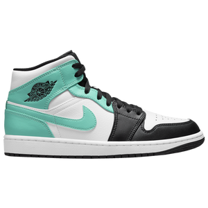

Image - 
Output on Microsoft Azure -
Shoes
Output on Mobilenet Model -
Shoes
Result -
I tested the image on Mobilenet and on Azure. Both of them said it was shoes. So the result is, both Mobilenet and Azure predicted the image and that they are the same in accurecy.